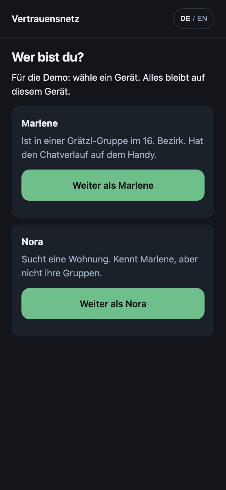
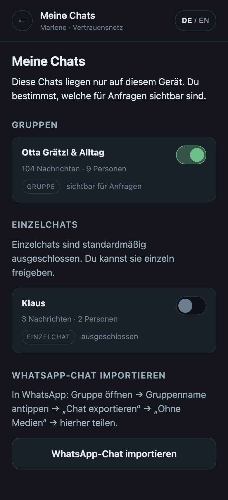
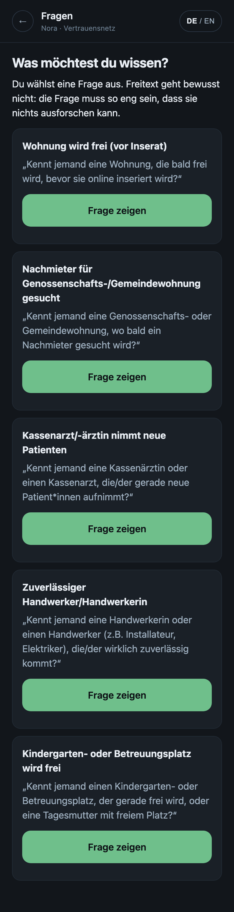
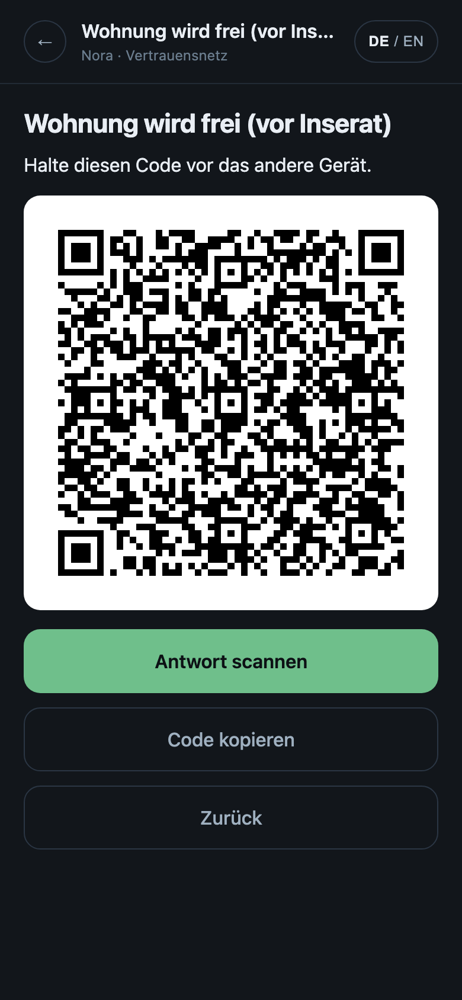
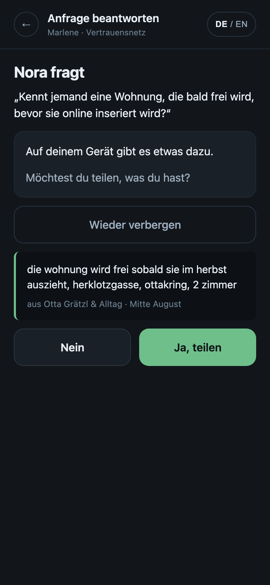
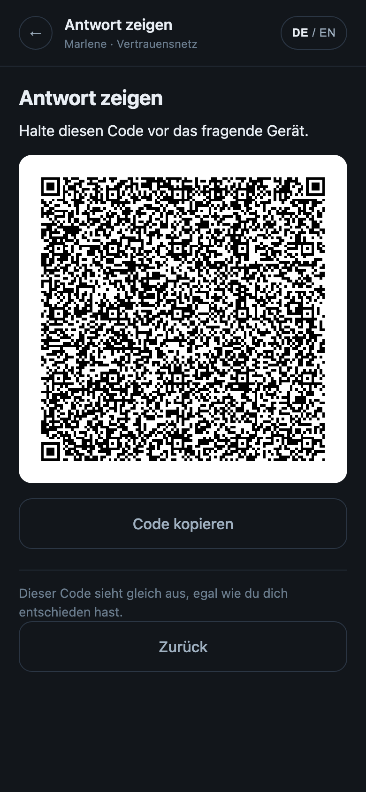
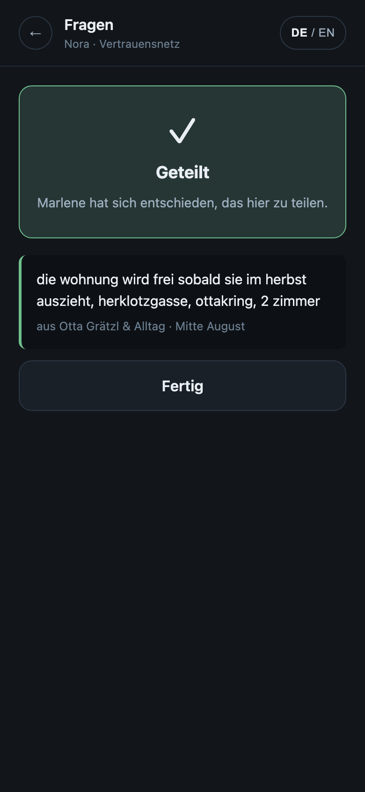
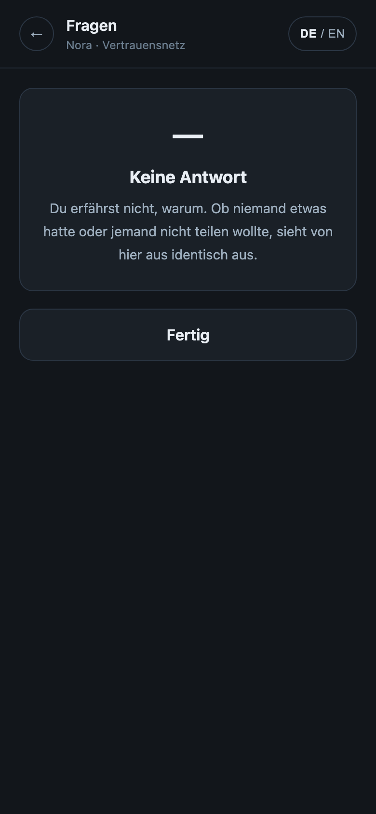
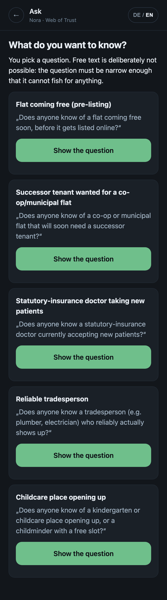
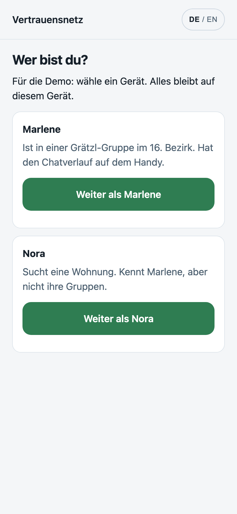

Beide Handys öffnen diese Adresse. Kein App Store, keine Installation.
Die sieben Schritte, headless verifiziert
Zwei getrennte Browser-Kontexte in Handy-Größe, gegen die echte HTTPS-Adresse. Die Kamera lässt sich headless nicht bedienen, also läuft der Test über den Einfügen-Weg. Der eingefügte Text ist Byte für Byte derselbe, den der QR-Code trägt.
Schritte 1 bis 3, zwei Geräte, bereits verbunden
PASSNora device boots
PASSMarlene device boots
PASSMarlene has the neighbourhood group
PASSthe 1-on-1 chat is excluded by default
Schritt 4, Nora fragt
PASSquery code produced
Schritte 5 und 6, lokaler Abgleich und Einwilligung
PASSMarlene found something
PASSthe preview shows the real flat message
PASSdecoys are not the top hit
PASSNora sees a shared answer
PASSNora sees the flat message
PASSNora never sees the excluded 1-on-1 content
Der Kern: Ablehnung und Unter-der-Schwelle sind ununterscheidbar
PASSdeclined answer reads as "no answer"
PASSbelow-k answer reads as "no answer"
PASSboth answer payloads are the same length
PASSboth payloads are the same length as a shared one
PASSNora sees an identical screen for decline and below-k
Byte-Identität, gleiche Frage, echte Oberfläche
PASSthe decline path really had a match to withhold
PASSthe no-match path really had nothing
PASSdecline and no-match are BYTE IDENTICAL for the same question
PASSbelow-k and no-match are BYTE IDENTICAL for the same question
Der Ausschluss von Einzelchats greift wirklich
PASSwith the 1-on-1 included, its content becomes matchable
PASSno uncaught page errors
22 von 22. Dazu 193 Unit-Tests, Typecheck sauber.
Was diese drei Zeilen bedeuten
„decoys are not the top hit“. Im eingespielten Chatverlauf liegen eine Ferienwohnung im Salzkammergut, ein Angebot Wohnungen zu putzen und ein WG-Zimmer wenige Zeilen neben dem echten Hinweis. Der Abgleich stellt die Herklotzgasse über alle drei. Eine Demo, die vor zwei Menschen die falsche Nachricht findet, ist schlimmer als eine, die nichts findet.
„decline and no-match are BYTE IDENTICAL for the same question“. Kein Unit-Test mit fixiertem Schlüssel, sondern zwei echte Geräte auf dieselbe Frage: eines lehnt mit einem echten Fund in der Hand ab, das andere hat tatsächlich nichts. Beide senden dieselbe Zeichenkette.
„Nora never sees the excluded 1-on-1 content“, gefolgt von „with the 1-on-1 included, its content becomes matchable“. Der Schalter ist in beide Richtungen belastbar. Nur so weiß man, dass er überhaupt verdrahtet ist.
Es gibt drei Gründe für „keine Antwort“: nichts gefunden, unter der Anonymitätsschwelle, oder bewusst abgelehnt. Alle drei sind hier gegeneinander geprüft, nicht nur zwei. Der vierte Grund, blockiert, ist im Unit-Test abgedeckt, weil die Oberfläche noch keine Blockier-Geste hat.
Die Bildschirme

StartWer bist du? Zwei Geräte, zwei Rollen.

Meine ChatsGruppen sichtbar, Einzelchats ausgeschlossen. Voreinstellung, nicht versteckte Option.

FragenKeine Freitextsuche. Fünf feste Fragen.

Die FrageNur Fragenkennung und Zufallszahl.

Die EinwilligungSie sieht zuerst, was geteilt würde. Dann entscheidet sie.

Die AntwortSieht gleich aus, egal wie sie entschieden hat.

GeteiltDie echte, unaufgeräumte Chatnachricht. Datum bewusst grob.

Keine AntwortDer Bildschirm, der das Argument trägt.

ENSprachumschaltung.

HellFolgt der Systemeinstellung.
Was ehrlich noch offen ist
Der Satz, der stimmt: „Nora kann an der Antwort nicht erkennen, ob Marlene nichts hatte oder ob Marlene etwas hatte und nicht teilen wollte.“
Nicht: „Nora erfährt gar nichts.“ Sie erfährt genau ein Bit.
Die Rechenzeit ist angeglichen. Die Überlegungszeit eines Menschen ist es nicht, und kein festes Zeitbudget nach dem Antippen kann eine Streuung verbergen, die vor dem Antippen entsteht. Das sauber zu schließen braucht eine feste Frist, also eine Produktentscheidung, keinen Bugfix.
kThreshold: 1 auf der Wohnungsfrage ist ein Demo-Behelf und darf nicht in Produktion. Die Recherche stuft „Wohnung vor Inserat“ als hoch sensibel ein, und k gleich 1 heißt, eine Nachricht führt auf eine Person zurück.
Was heute Nacht sonst entstand
DEMO-RUNBOOK.mdDer Ablauf, nummeriert, mit Ausweg pro Schritt und 60-Sekunden-Reset
05-chat-group-information.md17 Kategorien, die nur in Chatgruppen zirkulieren, Wiener Quellen, fünf Fragenvorlagen
06-messages.mdNachrichtenverläufe sicher abfragen: Recht, Nutzungsbedingungen, DSGVO Art. 20, lokale Modelle
04-permission-model.mdCommunity wird Network, benutzerbestimmte Stufen, Vertrauensgraph
stub/trust-graph.htmlLauffähiger Stub des Vertrauensgraphen
07-packaging.mdAPK ohne App Store, und warum es das für iOS nicht gibt
03-closing-questions.mdDie Fragen für nachher, und die eine für vorher
RESULT-REPORT.mdWas gilt, was sich geändert hat, was überholt ist, was offen bleibt
Alle unter web-of-trust/overnight/ im Repo. Zweig demo-2026-08-31.